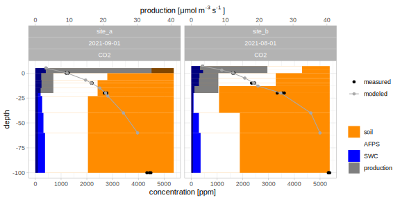

ConFluxPro is a free toolbox for modelling soil gas fluxes using the Flux Gradient Method (FGM). It provides functions for data preparation, a framework for model set-up and implements different FGM models, including an inverse approach.
Installation
Install the current development version from github:
# install.packages("remotes")
remotes::install_github("valentingar/ConFluxPro")To get started, check out the provided vignette after installation:
vignette("overview", package = "ConFluxPro")Basis
The Flux Gradient Method (FGM) calculates diffusive flux rates of gases from vertical concentration gradients in the soil air and the apparent diffusion coefficient coefficient .
The FGM is an excellent alternative to other methods, such as Eddy-Covariance or chamber measurements, that can be costly or work intensive. By measuring the concentration gradients in the soil and deriving the apparent diffusion coefficient from soil physical parameters, a continuous and low-impact measurement of soil gas fluxes and vertical production profiles is possible.
While the basic calculation of fluxes may be simple, FGM requires the combination of different datasets of varying methods. This is where ConFluxPro comes in. This package can help to easily process raw data, combine datasets and set up different model variants in a straightforward and reproducible manner.
For more background, see a review on the method and how it can be deployed especially for long-term monitoring of soil gas fluxes.
Workflow
Data handling
A central idea in ConFluxPro is that each distinct profile, i.e. a single time point at a given site for a given gas, can be uniquely identified by a set of columns called id_cols.
Different classes help to set up and validate datasets:
-
cfp_gasdata()Adata.framewhere for each profile there is concentration data in a columnx_ppmat different depths in columndepth. -
cfp_soilphys()Adata.framewith soil physical information. Each profile is split into layers defined by theirupperandlowerboundary, without gaps or overlaps. Each layer has at least information of the density of the airc_airand the diffusion coefficientDSfor a given gas. -
cfp_layers_map()Adata.framethat is layered similarly and gives information for the model structure, i.e. for which layers a production rate should be calculated.
gasdata <- cfp_gasdata(ConFluxPro::gasdata,
id_cols = c("site", "Date"))
#>
#> added 'gas' to id_cols
soilphys <- cfp_soilphys(ConFluxPro::soilphys,
id_cols = c("site", "Date"))
#>
#> added 'gas' to id_cols
layers_map <- cfp_layers_map(
data.frame(site = rep(c("site_a", "site_b"), each = 3),
upper = c(5, 0, -20, 7, 0, -20),
lower = c(0, -20, -100, 0, -20, -100)),
gas = "CO2",
lowlim = 0,
highlim = 1000,
id_cols = "site")
#>
#> added 'gas' to id_colsThese three datasets are then combined in the central data class cfp_dat(), and automatically adjusted to correctly match each other. This object contains then all necessary information.
my_dat <- cfp_dat(gasdata, soilphys, layers_map)
my_dat
#>
#> A cfp_dat object to be used as input in ConFluxPro models.
#> id_cols: site Date gas
#> number of profiles: 24
#> number of groups: 2Flux modeling
Once a cfp_dat() object is created succesfully, the modelling is very easy:
Each modelling function can be adapted to different needs. For example, we can provide a different modes argument to fg_flux() to calculate the concentration gradient form an exponential fit instead of a linear model.
FLUX <- fg_flux(my_dat, modes = "EF")The result in both cases is an object that contains the original data my_dat and th flux rates in different soil layers for each of the profiles identified in cfp_dat(). From this, the soil/atmoshere efflux rate and the specific production rate in each model soil layer can be extracted.
# soil/atmosphere efflux
efflux(FLUX)
efflux(PROFLUX)
# per-layer production rate
production(FLUX)
production(PROFLUX)In the case of the forward model FLUX, this may require some consideration for which method of extrapolation to be used (see the manual ?efflux), as different approaches are implemented.
efflux() returns a data.frame with one row per profile and the corresponding efflux rate.
library(ggplot2)
efflux(PROFLUX) %>%
ggplot(aes(x = Date, y = efflux, col = site))+
geom_line()+
scale_color_viridis_d()+
scale_x_date(date_minor_breaks = "1 month")+
ylab(expression("CO"[2]~"efflux ["*mu*"mol m"^"-2"~"s"^"-1"*"]"))+
theme_minimal()
Extracting information
Most information stored in the objects can be easily extracted. Extraction functions have the prefix cfp_.
# Get the id_cols that identify the unique profiles of an object:
cfp_id_cols(gasdata)
cfp_id_cols(FLUX)
# Get the layers_map from a combined dataset or model:
cfp_layers_map(my_dat)
cfp_layers_map(PROFLUX)Big datasets: Parallel processing and progress bars
For big datasets (1000+ profiles), some calculations may takes some time. ConFluxPro uses the excellent future and progressr packages for parallel processing and progress bars in some cpu-intensive functions.
library(future)
library(progressr)
# enable paralell processing with future
plan(multisession())
# disable
plan(sequential())
# enable progress bars for one function call
with_progress({pro_flux(my_dat)})
# or for all function calls automatically
handlers(global = TRUE)
# and change layout
handlers(handler_progress(format = ":percent [:bar] :eta"))Subsetting
Subsetting for all main data types happens analogous to dplyr by calling filter(). You can select profiles based on any id_cols or by selecting the prof_id generated in the call to cfp_dat(). This also works for model results.
filter(soilphys,
Date == "2021-04-01",
site == "site_b")
#>
#> A cfp_soilphys object
#> id_cols: site Date gas
#> 1 unique profiles
#>
#> site TPS a b depth upper lower Date SWC t p
#> 1 site_b 0.35 1.2 1.5 -80.0 -60 -100 2021-04-01 0.14674436 5.131912 1013
#> 2 site_b 0.35 1.2 1.5 -50.0 -40 -60 2021-04-01 0.12995582 5.248726 1013
#> 3 site_b 0.20 0.8 1.3 -30.0 -20 -40 2021-04-01 0.04510915 5.326602 1013
#> 4 site_b 0.20 0.8 1.3 -16.5 -13 -20 2021-04-01 0.03230483 4.975450 1013
#> 5 site_b 0.61 0.7 1.4 -9.0 -5 -13 2021-04-01 0.12086816 5.118654 1013
#> 6 site_b 0.61 0.7 1.4 -2.5 0 -5 2021-04-01 0.12189161 5.242764 1013
#> 7 site_b 0.80 0.4 1.5 1.5 3 0 2021-04-01 0.15749876 5.378220 1013
#> 8 site_b 0.80 0.4 1.5 5.0 7 3 2021-04-01 0.12795519 5.582906 1013
#> AFPS DSD0 gas D0 DS c_air
#> 1 0.2032556 0.10996264 CO2 1.428319e-05 1.570618e-06 43.78390
#> 2 0.2200442 0.12386427 CO2 1.429405e-05 1.770522e-06 43.76553
#> 3 0.1548909 0.07081471 CO2 1.430129e-05 1.012741e-06 43.75329
#> 4 0.1676952 0.07851755 CO2 1.426866e-05 1.120340e-06 43.80853
#> 5 0.4891318 0.25721385 CO2 1.428196e-05 3.673518e-06 43.78599
#> 6 0.4881084 0.25646070 CO2 1.429349e-05 3.665719e-06 43.76647
#> 7 0.6425012 0.20600177 CO2 1.430608e-05 2.947079e-06 43.74518
#> 8 0.6720448 0.22037247 CO2 1.432512e-05 3.156862e-06 43.71306
filter(my_dat, Date < "2021-05-01")
#>
#> A cfp_dat object to be used as input in ConFluxPro models.
#> id_cols: site Date gas
#> number of profiles: 8
#> number of groups: 2
filter(PROFLUX, prof_id %in% c(1,7,9))
#>
#> A cfp_pfres pro_flux model result.
#> mean RMSE achieved: 0.007619
#> number of failed fits: 0
#>
#> A cfp_pfmod pro_flux model.
#> zero_flux: TRUE
#> zero_limits: -Inf Inf
#> DSD0_optim: FALSE
#> evenness_factor: 0
#> known_flux_factor: 0
#>
#> A cfp_dat object to be used as input in ConFluxPro models.
#> id_cols: site Date gas
#> number of profiles: 3
#> number of groups: 1Plotting
To get a better understanding of your data, you can plot profiles with the plot_profile() function. This returns an editable ggplot2 plot.
PROFLUX %>%
filter(prof_id %in% c(16, 17)) %>%
plot_profile()+
ggplot2::theme_light()
soilphys %>%
filter(Date == "2021-08-01") %>%
plot_profile()+
ggplot2::theme_light()
Getting help
Most functionality, background and output is documented in the internal manual. Just run ?function_name to access it. Furthermore, you can get descriptions of all parameters and their respective units with a special function cfp_parameter().
cfp_parameter("efflux")
#> name description unit
#> 29 efflux efflux at the soil/atmosphere interface µmol m^-2 s^-1
cfp_parameter(soilphys)
#>
#> This object contains the following parameters:
#> name description unit
#> 2 gas name of the gas <NA>
#> 3 depth depth, higher values point up cm
#> 4 upper upper border of layer cm
#> 5 lower lower border of layer cm
#> 6 TPS total pore space vol/vol
#> 7 AFPS air-filled pore space vol/vol
#> 8 SWC soil water content vol/vol
#> 9 t temperature °C
#> 10 p pressure hPa
#> 11 DSD0 relative diffusivity 1
#> 12 DS apparent diffusion coefficient m^2 s^-1
#> 13 D0 diffusion coefficient in air m^2 s^-1
#> 14 c_air number density of air mol m^-3Contact
This package is being developed by Valentin Gartiser: code [at] valentingartiser.de
Please contact me if you experience any problems or have questions - I will be glad to help out where I can.
License
This program is free software: you can redistribute it and/or modify it under the terms of the GNU General Public License as published by the Free Software Foundation, either version 3 of the License, or (at your option) any later version.
This program is distributed in the hope that it will be useful, but WITHOUT ANY WARRANTY; without even the implied warranty of MERCHANTABILITY or FITNESS FOR A PARTICULAR PURPOSE. See the GNU General Public License for more details.